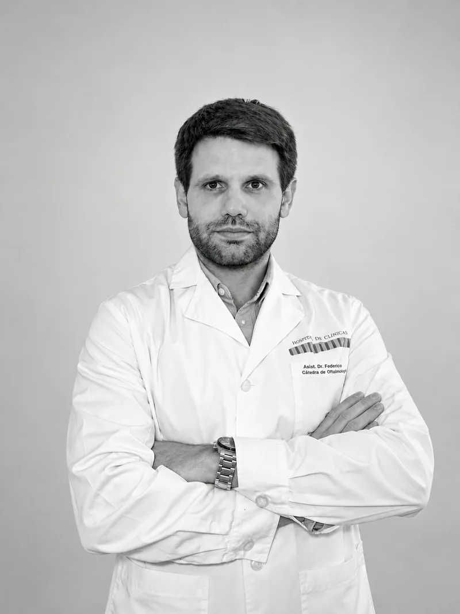
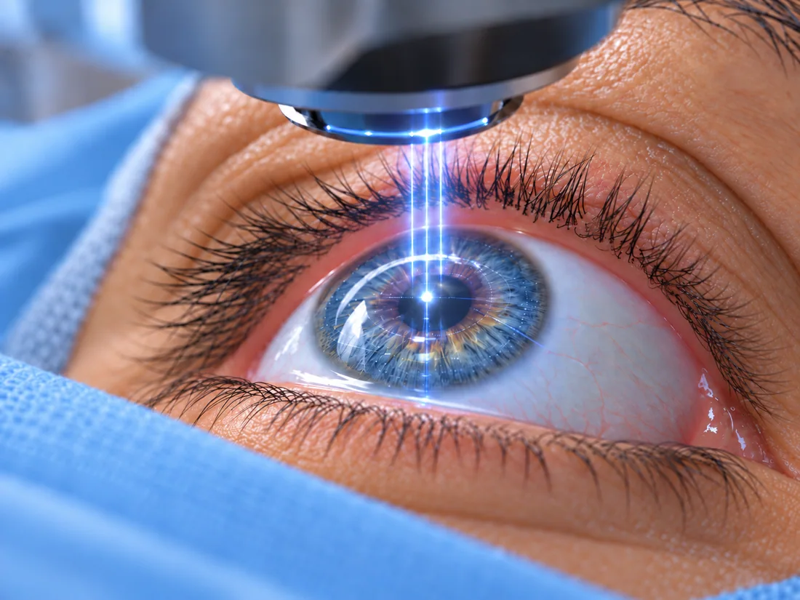
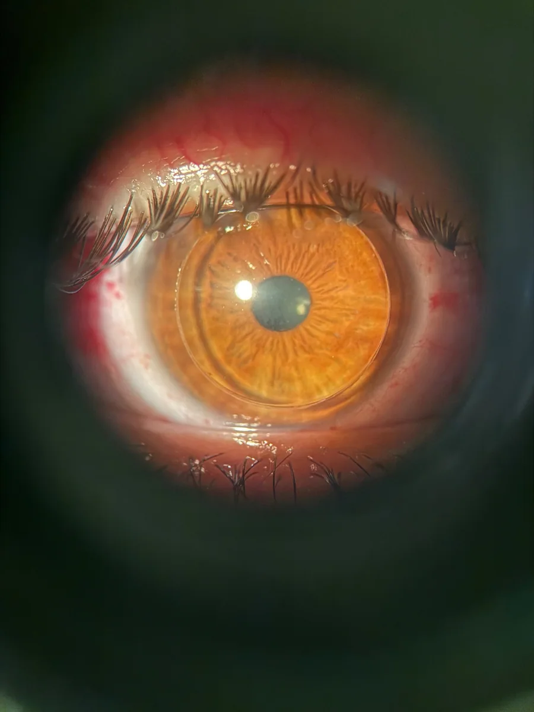
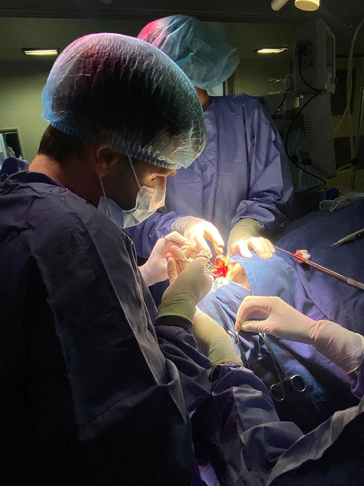

Cirugía de catarata
Tratamiento quirúrgico de la catarata con selección de la lente intraocular según la evaluación clínica y las necesidades visuales.
Conocer las opciones de cirugía de catarataOftalmología en Uruguay
Cirugía de catarata · Cirugía refractiva
Consulta oftalmológica, cirugía de catarata y cirugía refractiva. Evaluación clínica y planificación individualizada de cada tratamiento.

Actividad clínica y quirúrgica
Diagnóstico y tratamiento de enfermedades oculares, con especial énfasis en cirugía de catarata, cirugía refractiva y córnea.
Tratamiento quirúrgico de la catarata con selección de la lente intraocular según la evaluación clínica y las necesidades visuales.
Conocer las opciones de cirugía de catarataProcedimientos para reducir la dependencia de anteojos o lentes de contacto.
Conocer las opciones de cirugía refractivaDiagnóstico y tratamiento de enfermedades de la parte anterior del ojo, como pterigión y queratocono.
Conocer los tratamientosControles de visión, evaluación de síntomas y enfermedades oculares.
01 · Cirugía de catarata
La catarata aparece cuando el cristalino, la lente natural del ojo, pierde su transparencia.
Puede causar visión borrosa, dificultad para ver de noche, deslumbramiento y cambios frecuentes en la graduación. El único tratamiento definitivo es la cirugía.
Durante el procedimiento, el cristalino opaco se reemplaza por una lente intraocular. La selección se basa en la salud ocular, las actividades habituales y los requerimientos visuales del paciente.
Realizo cirugía mediante ultrasonido, con la posibilidad de incorporar asistencia de láser de femtosegundo.
Agendar consulta02 · Cirugía refractiva
La cirugía refractiva permite reducir la dependencia de anteojos o lentes de contacto.
La elección del procedimiento requiere evaluar la graduación, su estabilidad, las características de la córnea y la salud ocular.
Realizo PRK, LASIK, femtoLASIK y CLEAR, además de cirugía con lentes intraoculares en pacientes seleccionados.
Dificulta ver con claridad los objetos a distancia. Las opciones de corrección dependen de la graduación y de las características de cada ojo.
Puede dificultar la visión cercana y, en algunos casos, también la lejana. La evaluación permite definir la alternativa más adecuada.
Produce visión desenfocada o distorsionada a diferentes distancias. Puede corregirse mediante distintas alternativas según cada caso.
Con los años, el ojo pierde capacidad para enfocar de cerca. Existen alternativas para disminuir la dependencia de anteojos, que se evalúan según las características y necesidades de cada paciente.

03 · Segmento anterior
El segmento anterior es la parte delantera del ojo. Incluye estructuras como la córnea, el iris y el cristalino.
Realizo evaluación y tratamiento de enfermedades de la córnea y del segmento anterior, incluyendo pterigión y queratocono.
En el queratocono, el crosslinking corneal es una de las opciones para intentar frenar la progresión. Su indicación depende de la evaluación y de los estudios de cada paciente.

Tecnología
Los estudios complementarios aportan información sobre la anatomía y la función ocular. Sus resultados se interpretan junto con el examen clínico para orientar el diagnóstico y el tratamiento.
Estudia la forma y las características de la córnea, y aporta mediciones del ojo para planificar distintos procedimientos.
Permiten medir el ojo, calcular la lente intraocular y guiar la planificación de la cirugía de catarata.
Obtiene imágenes detalladas de la mácula, el nervio óptico y el segmento anterior, según lo que requiera cada caso.
Integra la evaluación clínica, los estudios y los requerimientos visuales para definir la estrategia de tratamiento.
Sobre mí
Soy médico especialista en Oftalmología por la Universidad de la República.
Mi actividad combina atención de pacientes, cirugía, formación continua y docencia universitaria. Comencé a realizar cirugía oftalmológica durante la residencia, en 2017.
Participación como expositor en congresos nacionales e internacionales y en trabajos de investigación científica.

Información para pacientes
Información general sobre los procedimientos, la anestesia y la recuperación. Las indicaciones específicas se establecen durante la consulta.
La elección considera la anatomía y la salud ocular, las actividades habituales y las expectativas del paciente. No existe una única lente adecuada para todos los casos.
No. Se requiere una evaluación completa, especialmente de la córnea, la graduación y su estabilidad, para determinar si la cirugía es una opción adecuada.
Como referencia, suele durar alrededor de 20 minutos, aunque depende de las características de cada caso. La preparación y la recuperación inmediata requieren tiempo adicional.
Depende de la cirugía, la evolución y el tipo de actividad. En algunos casos es posible retomar tareas de oficina al día siguiente. El ejercicio, los esfuerzos y la conducción requieren indicaciones específicas.
En muchas cirugías de catarata y refractivas se utiliza anestesia local en gotas. Según el procedimiento y las necesidades del paciente, pueden requerirse otras medidas anestésicas o sedación.
Con la anestesia, habitualmente no se siente dolor durante el procedimiento, aunque pueden percibirse luces, contacto o presión. El equipo supervisa el confort del paciente durante la cirugía.
Contacto